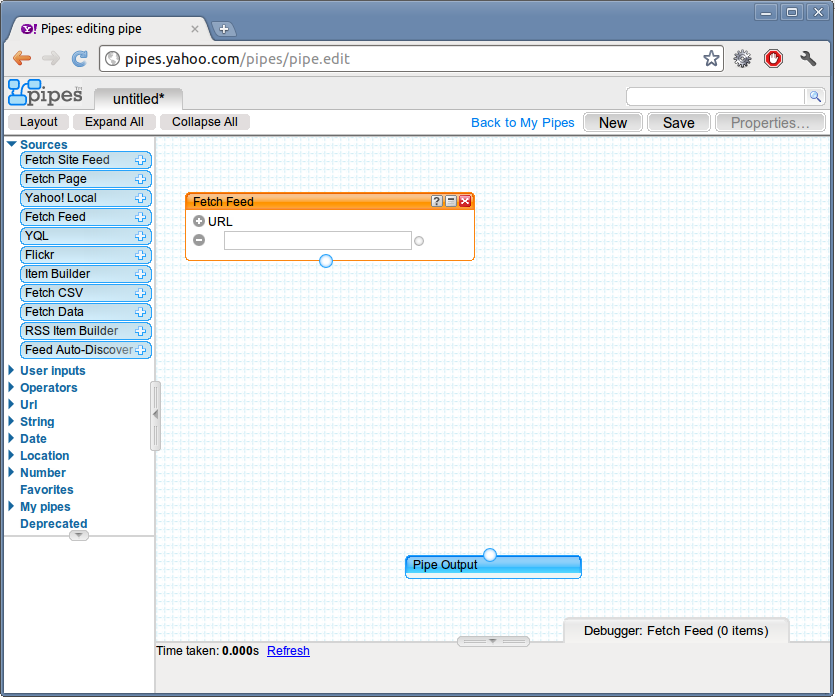
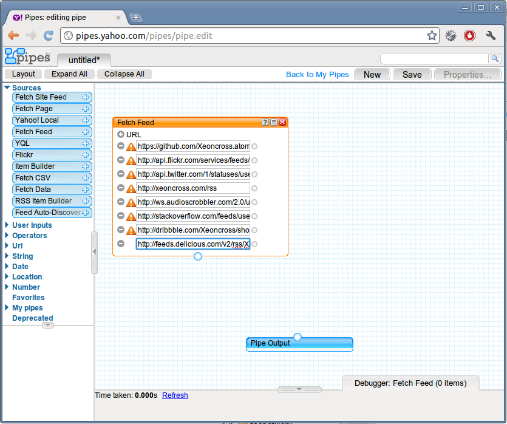
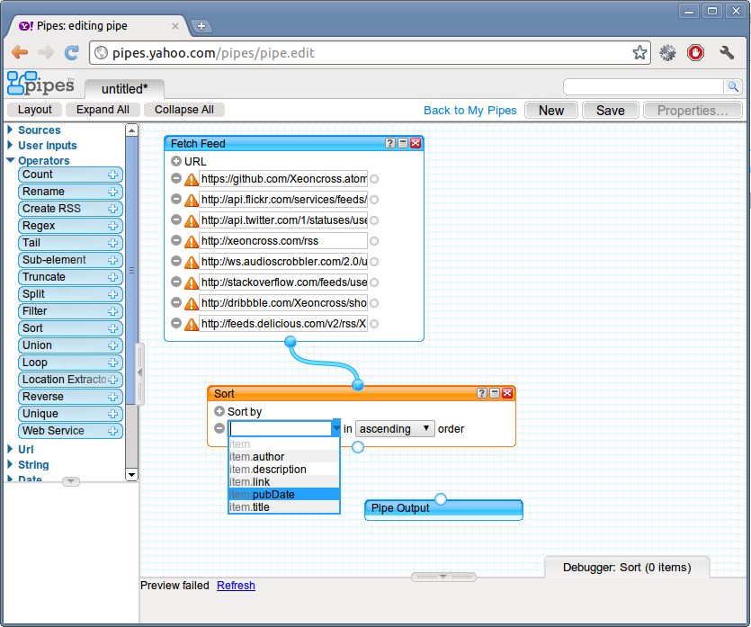
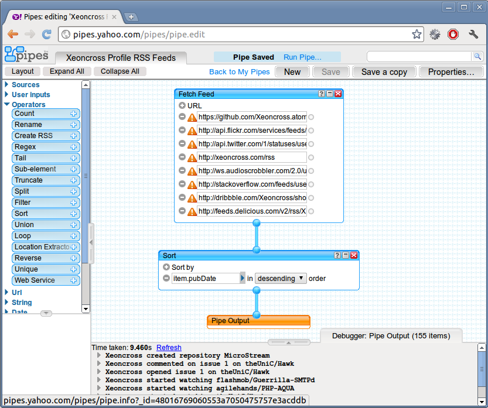
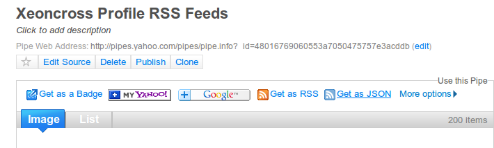
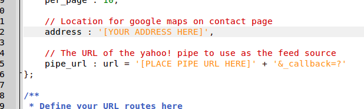

This project is an entry to the 10k Challenge hosted by An Event Apart and Microsoft. It is released totally free under the MIT license.
David Pennington ( david{-}xeoncross.com )
MicroStream is a tumblr-like blogging system that aggregates your content from across the web in
one convenient location. By using HTML 5's new window.history we can create a seamless browsing
experience from page to page while maintaining a well designed URL structure (instead of hash-tags).
For user agents that do not yet support window.history, we configure the web server to redirect
all requests to index.html so it can inspect the URL path on each request to load the correct resource.
This system has a routing system so you can create your own pages. Any request that does
not match a defined route will be shown the 404 page.
MicroStream also supports subfolder setup. So you can run your site in the site root or in a sub directory without trouble. The routing system will add/remove the correct site path.
The contact page is an example using the Google Maps API to geocode addresses to instantly show you users where you are in the world in relation to them.
You can download this project in either zip or tar formats.
You can also clone the project with Git by running:
$ git clone git://github.com/Xeoncross/microstream
This system uses the Yahoo! Pipes web API to aggregate all your RSS feeds into an easy to consume JSON response.
Click to create a new pipe and drag a "Fetch Feed" component onto the canvas.

Click the "+" (plus) icon next to the text "URL" to create additional input fields which you can use to add all your feed URL's.

Add a new "Sort" operator to the canvas and select "sort by pubDate, descending" to sort all the items in the order they were published. Make sure to drag a link between the "Fetch Feed" and "Sort" boxes.

Connect the "Sort" operator to the "Pipe Output" and click "Save" at the top of the screen.

Click "Get as JSON" on the pipe page to load the JSON view of the pipe. Then copy the URL in the address bar.

Open "index.html" and scroll down to the configuration line which asks for your yahoo pipe URL. Paste the URL and save the file!

Make sure to change any other links in the index.html file such as the links to your online profiles and friends! You also need to set your address so the map shows the correct location!
You can see this system in action at http://xeoncross.com.
If you are using the system in a sub-folder, make sure you edit the .htaccess file and JavaScript "config" variable (in index.html) with the correct name of the sub-folder you are using.